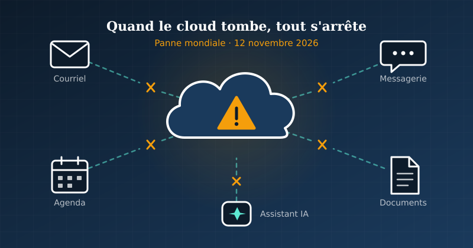

Panne Microsoft 365 du 12 novembre 2026 : ce qu'elle révèle de notre dépendance au cloud

Illustration : Ponts TI
Le jeudi 12 novembre 2026, j'étais complètement bloqué dans mon travail. Plus de courriel, plus de réunions, plus d'assistant IA, plus d'accès à certains documents partagés. J'ai d'abord partagé cette réflexion sur LinkedIn. Je la reprends ici, un peu plus développée.
Ce qui s'est passé
Le jeudi 12 novembre 2026, vers 11 h (heure de Montréal), une panne mondiale a touché Microsoft 365 : Outlook et Exchange Online d'abord, puis Teams, SharePoint, OneDrive et Microsoft 365 Copilot. Des utilisateurs de 74 pays et territoires ont été touchés. Microsoft a confirmé le rétablissement complet le samedi 14 novembre.
Microsoft a indiqué que la panne n'était pas une cyberattaque. Selon l'entreprise, elle venait d'un problème introduit lors d'une mise à niveau antérieure de la capacité de son réseau, révélé par un changement réseau ultérieur. (Sources : BleepingComputer, 12 novembre 2026 ; Al Jazeera, 13 novembre 2026 ; Windows Central, 14 novembre 2026 — voir la liste à la fin.)
Une dépendance qu'on ne voit qu'au moment où tout s'arrête
Cette panne montre bien la dépendance de plusieurs systèmes aux mêmes solutions : Copilot, Outlook, Teams, le cloud. Au quotidien, on ne la remarque pas. Tout fonctionne, tout est connecté. C'est au moment où un seul maillon tombe qu'on réalise que la messagerie, l'agenda, les réunions, les documents et l'assistant IA reposaient tous sur la même infrastructure.
Quand cette question était soulevée il y a quelques années, elle trouvait peu d'écho. Le mouvement vers le cloud était fort, et je le comprends : il apporte de vrais avantages. Mais il s'est parfois fait au prix des compétences internes — la connaissance fine de ses propres systèmes, de la façon dont ils sont construits et de ce qu'on peut faire quand l'outil principal ne répond plus.
Ce n'était pas une cyberattaque — et c'est justement ce qui me frappe
Microsoft a été clair : aucune activité malveillante. Une erreur technique, liée à une mise à niveau du réseau. Et pourtant, d'après ce que j'observe, la plupart des exercices de préparation — tests de confinement, simulations d'incident — restent surtout centrés sur les cyberattaques.
Une panne d'un fournisseur, sans attaquant, sans rançon, sans intrusion, a pourtant des effets très semblables pour les personnes qui travaillent : on ne peut plus communiquer, ni accéder à ses outils. Il me semble qu'il est temps d'intégrer aussi ce type de scénario dans les plans de continuité.
Fait vérifié : la panne du 12 novembre 2026 a touché 74 pays et territoires, et Microsoft a exclu une cyberattaque. Mon observation : les exercices de préparation que je connais visent surtout les attaques. Mon opinion : avec le contexte géopolitique actuel et la concentration des services chez quelques grands fournisseurs, je pense qu'on verra probablement d'autres pannes de ce genre. C'est une impression, pas une prévision appuyée par des données.
🧭 Se préparer, concrètement
Quelques pistes, sans prétendre avoir la solution complète :
- Pour les organisations : ajouter un scénario « panne majeure d'un fournisseur cloud » aux exercices de continuité, au même titre que les scénarios de cyberattaque.
- Prévoir un canal de communication de secours qui ne dépend pas du même fournisseur : une liste de numéros de téléphone, un groupe de messagerie alternatif, une procédure simple connue de tous.
- Garder accessibles hors ligne les documents dont on a besoin pour fonctionner une journée : procédures critiques, contacts clés, informations de projet essentielles.
- Préserver les compétences internes : des personnes qui comprennent comment les systèmes sont construits, et pas seulement comment utiliser l'outil.
- Pour vous, à titre individuel : savoir à qui téléphoner et quoi faire si vos outils habituels ne répondent plus. Ce réflexe simple évite beaucoup de stress.
Pour les personnes qui débutent en TI ou qui sont en reconversion, je retiens aussi ceci : comprendre ce qui se trouve derrière les outils — réseau, authentification, messagerie, dépendances entre services — reste une base précieuse. C'est le même message que dans mon article sur la spécialisation et les fondamentaux : les outils changent, la compréhension des systèmes dure.
Et vous ?
Avez-vous été bloqués vous aussi le 12 novembre ? Votre organisation avait-elle un plan pour ce genre de situation ? Je serais curieux de lire vos expériences.
Vous avez vécu cette panne au travail ?
Partagez votre expérience ou vos questions. Je lis chaque message et j'y réponds dès que je le peux.
📚 Sources
- BleepingComputer — Massive Microsoft 365 outage disrupts Outlook, Teams, Copilot worldwide (12 novembre 2026)
- Al Jazeera — Microsoft hit by global outages: What happened and why? (13 novembre 2026)
- Windows Central — Microsoft s'excuse et attribue la panne à une mise à niveau réseau (14 novembre 2026)
- Microsoft 365 — avis d'incident EX1550543 et MO1550821 (centre d'administration Microsoft 365)